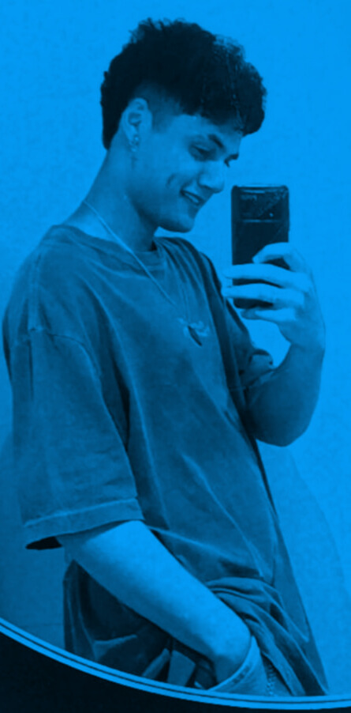

Quem sou eu?
Olá! Meu nome é Gabriel Liberato, tenho 21 anos e sou apaixonado por tecnologia e programação. Desde cedo, sempre tive curiosidade sobre como as coisas funcionam no mundo digital, o que me levou a explorar e desenvolver habilidades em diversas áreas da tecnologia.
Atualmente, estou cursando o 3° semestre de Análise e Desenvolvimento de Sistemas na Universidade Unicesumar, onde tenho a oportunidade de aprofundar meus conhecimentos em áreas como desenvolvimento de software, banco de dados, gestão de projetos e muito mais. A cada dia, busco aprender coisas novas e me desafiar para me tornar um profissional cada vez mais capacitado.
